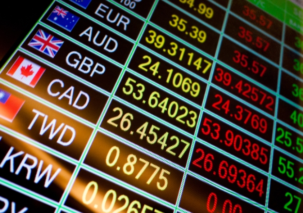

The rate at which one currency can be exchanged for another between nations or economic zones
An exchange rate is the rate at which one currency can be exchanged for another between nations or economic zones. It is used to determine the value of various currencies in relation to each other and is important in determining trade and capital flow dynamics.
Exchange rates are quoted between two currencies. For example – how many Canadian dollars (CAD) can be exchanged for one U.S. dollar (USD)? The exchange rate as of late August 2020 is 1.31, which shows that CAD 1.31 is received if exchanging USD 1.00.
Exchange rates are defined as the price that one nation or economic zone’s currency can be exchanged for another currency. The rates are impacted by two factors:
In addition, the rates can be quoted either directly or indirectly or with the use of cross-rates.
Direct quotation of exchange rates involves quoting the price of a unit of foreign currency directly in terms of the number of units of domestic currency that are exchanged.
Indirect quotation of exchange rates involves expressing the price of a domestic currency in terms of the number of units of foreign currency that are exchanged.
Cross rates are a method of quoting exchange rates in which various foreign currency exchange rates are used to imply a domestic exchange rate, e.g., if you wanted to determine the EUR/USD exchange rate but can’t access a direct quote. You could use the EUR/CAD exchange rate and the CAD/USD exchange rate to infer the EUR/USD rate.
Exchange rates capture a lot of economic factors and variables and can fluctuate for various reasons. Some of the reasons that exchange rates can fluctuate include:
Changes in interest rates impact currency value and exchange rates. All else being equal, a higher interest rate in a domestic country will increase the demand for a domestic currency since more foreign investors will seek to invest at the higher interest rate, thereby investing foreign capital into the domestic currency. However, in practice, it is balanced out by inflationary pressures.
Changes in inflation rates impact currency value and exchange rates. All else being equal, a higher inflation rate in a domestic country will decrease the demand for the domestic currency since the value of the currency depreciates relatively faster over time than other foreign currencies.
Government debt is the amount of debt owed by a federal government. It impacts currency value and exchange rates since a country with higher debt is less likely to acquire foreign capital, which, in turn, leads to inflation. It puts downward pressure on the domestic currency and decreases its value in exchange rates.
The political state of a country influences the currency value and exchange rates since a country with higher political turmoil is less likely to attract foreign investors. Political instability fosters more risk for investors, as they are unsure of whether they will see their investments protected via fair market practices or a strong legal system.
A country’s net exports or imports impact currency value and exchange rates. A domestic country that exports more goods than it imports will experience a higher demand for its currency, and thereby, will see its exchange rate increase relative to other foreign currencies.
A country that experiences a recession is less attractive to foreign investors. Firstly, it is due to the increased risk of investing in an economy with a poor economic outlook. Secondly, when a recession occurs, interest rates typically decrease, which decreases the foreign demand for domestic currency.
If a country’s currency is expected to rise for any reason, investors will demand more of the currency to realize a profit based on that expectation. It can cause immediate demand increases for domestic currency relative to foreign currencies.
There are other special considerations when exchange rates are determined. For example, various “safe-haven” currencies are believed to be stable and attract foreign capital when the global economic outlook is uncertain. It includes currencies such as the U.S. dollar, euro, Japanese yen, and Swiss franc.
Another special consideration for the U.S. dollar is that it is the global federal reserve currency, which increases the baseline demand for the U.S. dollar relative to other currencies.
Source: corporatefinanceinstitute.com/resources/economics/exchange-rate/